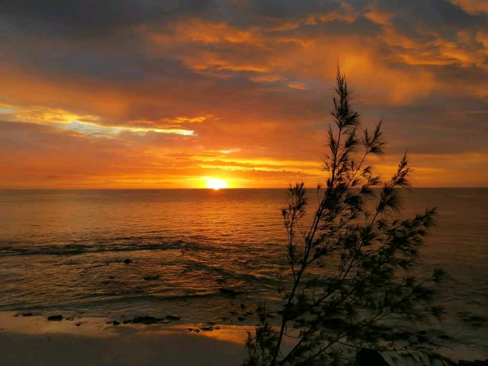
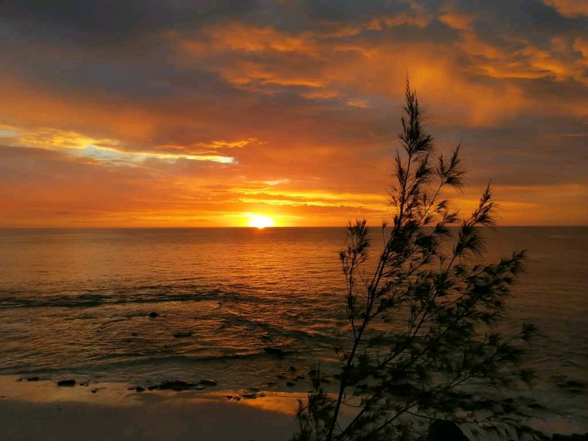

BLOG TOURISTIQUE

 

A LA DECOUVERTE DE SALARY BAY: est un autre petit coin de paradis dans le sud de Madagascar. Plus précisément, ce fameux site touristique se situe à environ 108km au nord de la ville de tulear en suivant la route du littoral parallèlement à RN9. Il faut d'abord prendre la belle route goudronnée de la RN9 jusqu'à Ambolomailaka, puis continuer sur environ 2km avant de bifurquer à gauche et prendre la route en terre qui mène vers Manombo sud. De Manambo sud jusqu'à Salary nord, la piste sableuse longe le littoral.
Meilleur endroit pour la plongée sous-marine
La route est ainsi accessible uniquement en voiture tout terrain. Il faut environ 3h30 pour faire ce trajet de puis Tulear. Puis, on arrive dans un endroit isolé, très calme et propre. Le paysage est extraordinaire, avec d'un côté une belle plage de sable fin avec une mer d'emeraude et l'autre côté une vaste zone forestière sèche. Salary bay dispose également d'un terrain d'atterrissage pour ceux qui ont les moyens de louer un petit avion privé pour y aller.cette station balnéaire est particulièrement calme. vous pourrez ainsi profiter énormement de la plage pendant votre séjour. L'hotel Salary bay propose également des activités nautiques comme la plongée sous-marin. Pour cela, différentes options sont proposées aussi bien pour les professionnels que pour les amateurs voire les novices en la matière. Cet endroit est en effet un lieu idéal pour apprendre à pratiquer la plongée sous-marine, et ce sous l'encadrement d'un spécialiste. Des sites de plongée intéressants y sont recensés dont les fameuses épaves du récif de Salary bay.
Une belle randonnée en quad
Outre les activités nautiques, faire une randonnée en quad fait partie fait partie des principales attractions touristiques de Salary bay. Pour cela, on fait une belle balade en suivant toujours la route du littoral, puis une inscursion dans la forêt avant d'escalader les dunes. Une très belle sensation donc, avec le paysage qui change tout au long du parcours.Le circuit débouche en effet sur la fameuse grande dune d'Andravona. Du sommet de la dune, on a une vue panoramique magnifique surle village des pêcheurs situé en contrebas et sur le canal de Mozambique, une vraie carte postale.
retour